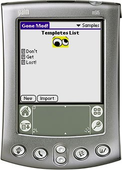

Gone Mad! is a silly word game (like Mad Libs) for Palm handheld computers! Gone Mad! comes with some sample story templates, but the really fun part is when you create your own!
Gone Mad! was created as a response to the wishlist found at: http://www.mpsomaha.org/willow/technology/wishlist.html.
Gone Mad! is released under the GNU General Public License v2 and requires Palm OS 3.0 or better.
You can support this project by donating any amount to my Pay Pal account.
Thanks goes to Tony Vincent for the nice icons and the sample stories. Tony has created a Gone Mad! Page. On Tonys site you can get various tips and tricks which will help you take advantage of Gone Mad!. Furthermore, Tony keeps a repository of Story Templates.
v1.6 (2005-12-12) Fixed a bug where the receiving handheld would crash when beaming templates. Changed versioning from vXrY to vX.Y. v1r5 (2005-06-14) When HotSyncing the categories etc. was disrupted. This has now been fixed (Kay Klutchko). The Keyword Help menu option is now also available from the Keywords screen (Kay Klutchko). Fixed a minor bug where to last view was not correctly restored when entering the program (Kay Klutchko). v1r4 (2005-06-12) Fixed a smaller bug where deleted templates/keywords may reappear when HotSync'ing. Added the Keyword Help menu option (Kay Klutchko). v1r3 (2005-05-31) Bug fixed where you couldn't import a single template when in the 'All' category (Glenn Hervieux). Fixed some other import/export bugs. v1r2 (2005-05-26) Fixed a bug which triggered "../Story.c,Line:473,(StorySaveKeywords) Out of memory." (Glenn Hervieux). When you select the Clear Keywords list all keywords belonging to the story are cleared - incl. the history (saved) list (Glenn Hervieux). If you had lesser keywords than what is possible on the keywords screen the display looked ... strange - too many scissors. Now there are only as many scissors as fields. v1r1 (2005-05-23) First public release.